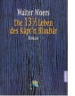

Die 13,5 Leben des Kapt'n Blaubar

Seemannsgarn vom Feinsten: ein Feuerwerk bariger Ideen Da? Walter Moers mehr als das Kleine Arschloch zeichnen kann, hat er langst bewiesen. Sogar in den Sprechblasen ist er hervorragend ohne Worte ausgekommen, als der Pinguin zweimal klopfte. Und nun sein erster Roman: Eine genial dicke Schwarte von 720 Seiten, in der ein Geistesblitz den nachsten jagt. Grun und gelb mochte man vor Neid werden: Wo hat der Mann blo? die vielen Ideen her? In seinen dreizehneinhalb Leben begegnet der Blaubar gehassigen Stollentrollen, unangenehmen Nattifftoffen, quasselnden Tratschwellen, durch die Wuste ziehenden Gimpeln, dem Wahnsinn, Fredda, der Berghutze -- eine Figur skurriler als die andere. Ab und an illustriert der Zeichner Moers die Gestalten des Erzahlers Moers, ein Glucksfall naturlich, aber im Vordergrund steht der Text, unerschutterlich. Und hier entfaltet sich in vollen Zugen, was der eine o